卷积神经网络（CNN）¶
约 6645 个字 30 张图片 预计阅读时间 22 分钟
Reference¶
- https://www.cse.iitm.ac.in/~miteshk/CS7015/Slides/Handout/Lecture11.pdf
- https://slds-lmu.github.io/seminar_nlp_ss20/convolutional-neural-networks-and-their-applications-in-nlp.html
- https://www.cs.toronto.edu/~lczhang/321/notes/notes11.pdf
- 池化层的理论基础：https://icml.cc/Conferences/2010/papers/638.pdf
- Batch Normalization：https://arxiv.org/pdf/1502.03167
1 Motivation¶
卷积操作¶
假设我们使用激光传感器在离散的时间间隔跟踪飞机的位置. 现在假设我们的传感器存在噪声. 为了获得噪声较小的估计值，我们希望对多个测量值进行平均. 由于最近的测量值更重要，所以我们希望进行加权平均.
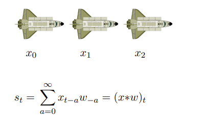
在实践中，我们通常只在一个小窗口内进行求和. 权重数组（w）被称为滤波器. 我们只需将滤波器在输入上滑动，并根据 \(x_t\) 周围的窗口计算 \(s_t\) 的值.
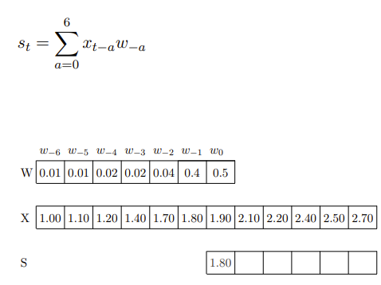
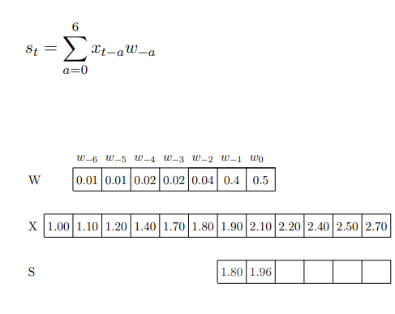
...
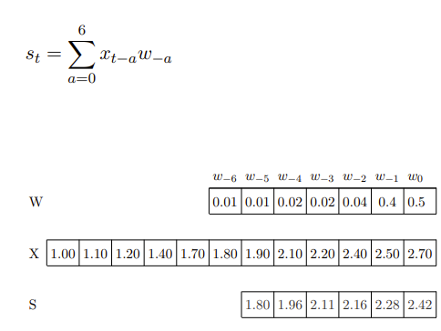
这里的输入（和内核）是一维的. 那么，我们也可以在二维输入上使用卷积操作吗？
我们可以将图像看作是二维输入. 现在我们想用一个二维滤波器（\(m×n\)）. 首先让我们看看二维卷积的公式是什么样子.
例子：
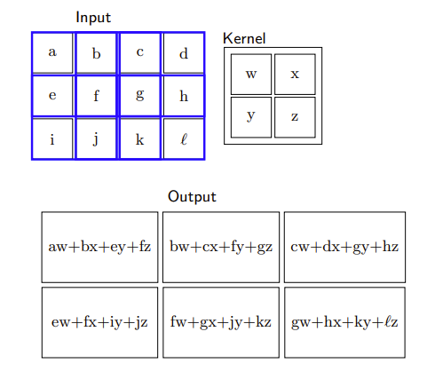
在接下来的讨论中，我们将使用下面这个卷积公式：
换句话说，我们假设内核以感兴趣的像素为中心. 这样我们就会同时考虑前面和后面的相邻像素.
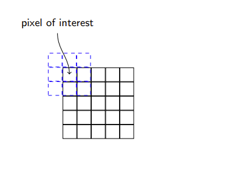
- 第一个公式： \(S_{ij} = (I * K)_{ij} = \sum_{a = 0}^{m - 1} \sum_{b = 0}^{n - 1} I_{i - a, j - b} K_{a, b} I_{i + a, j + b} K_{a, b}\) ，求和范围是从 \(a = 0\) 到 \(m - 1\) 、 \(b = 0\) 到 \(n - 1\) ，它只考虑了滤波器（内核） \(K\) 中从起始位置开始的元素 ，是基于一种从图像左上角开始以滤波器大小为窗口逐步滑动计算的思路 ，没有考虑滤波器元素关于中心对称等情况.
- 第二个公式： \(S_{ij} = (I * K)_{ij} = \sum_{a=\left\lfloor -\frac{m}{2} \right\rfloor}^{\left\lfloor \frac{m}{2} \right\rfloor} \sum_{b=\left\lfloor -\frac{n}{2} \right\rfloor}^{\left\lfloor \frac{n}{2} \right\rfloor} I_{i - a, j - b} K_{\frac{m}{2}+a,\frac{n}{2}+b}\) ，求和范围是以滤波器中心为基准 ， \(a\) 和 \(b\) 的取值范围关于0对称. 这种方式假设滤波器以感兴趣的像素为中心，同时考虑了像素周围前后的相邻像素 ，更符合将滤波器中心放置在目标像素上进行卷积计算的思想.
让我们看一些对图像应用二维卷积的例子： - 用全为1的滤波器卷积会模糊图像.
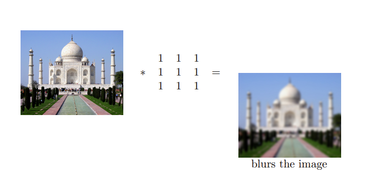
- 用 $ \begin{bmatrix}0 & -1 & 0 \ -1 & 5 & -1 \ 0 & -1 & 0\end{bmatrix} $ 这个滤波器卷积会锐化图像.
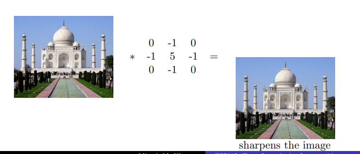
- 用 $ \begin{bmatrix}1 & 1 & 1 \ 1 & -8 & 1 \ 1 & 1 & 1\end{bmatrix} $ 这个滤波器卷积会检测边缘.
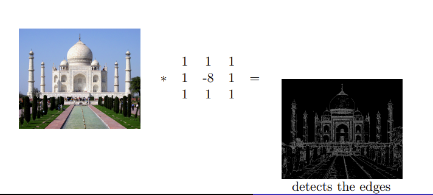
我们只需将内核在输入图像上滑动. 每次滑动内核，我们都会在输出中得到一个值. 得到的输出被称为特征图. 我们可以使用多个滤波器来获得多个特征图.
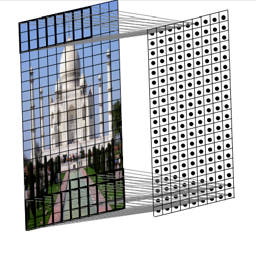
问题：在一维情况下，我们在一维输入上滑动一维滤波器；在二维情况下，我们在二维输出上滑动二维滤波器. 那么在三维情况下会发生什么呢？
三维滤波器会是什么样子？它将是三维的，我们将其称为体（volume）. 同样，我们将这个体在三维输入上滑动并计算卷积操作. 需要注意的是，在本讲中，我们假设滤波器总是延伸到图像的深度. 实际上，我们是在三维输入上进行二维卷积操作（因为滤波器沿着高度和宽度移动，但不沿着深度移动）. 因此，输出将是二维的（只有宽度和高度，没有深度）. 同样，我们可以应用多个滤波器来获得多个特征图.
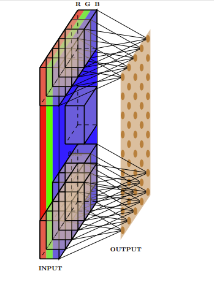
输入大小、输出大小和滤波器大小之间的关系¶
到目前为止，我们还没有明确说明输入、滤波器、输出的维度以及它们之间的关系. 我们将了解它们是如何关联的，但在此之前，我们先定义一些量：
- 原始输入的宽度（\(W_1\)）、高度（\(H_1\)）和深度（\(D_1\)）.
- 步长S（我们稍后会详细介绍）.
- 滤波器的数量K.
- 每个滤波器的空间范围（\(F\)）（每个滤波器的深度与每个输入的深度相同）.
- 输出是 \(W_2×H_2×D_2\) （我们很快会看到计算 \(W_2\)、\(H_2\) 和 \(D_2\) 的公式）.
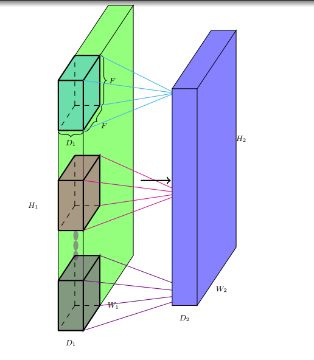
让我们计算输出的维度（\(W_2\), \(H_2\)）. 注意，我们不能将内核放置在角落，因为这样会超出输入边界. 对于所有阴影点都是如此（内核超出输入边界）. 这导致输出的维度比输入小. 一般来说，\(W_2 = W_1 - F + 1\) ，\(H_2 = H_1 - F + 1\). 我们将进一步完善这个公式.
如果我们希望输出与输入大小相同呢？我们可以使用一种称为填充的方法. 用适当数量的0输入对输入进行填充，这样就可以在内核放置在角落时应用它. 例如，对于一个3×3的内核，我们使用填充 \(P = 1\) ，这意味着我们在顶部、底部、左侧和右侧各添加一行和一列0输入.
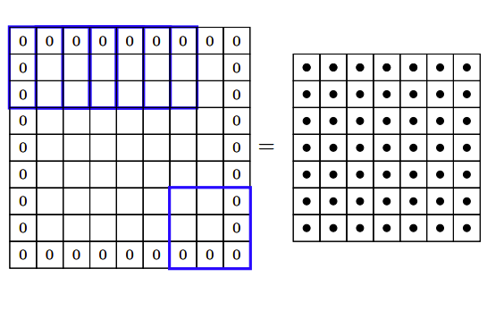
这样我们有，\(W_2 = W_1 - F + 2P+ 1\) ，\(H_2 = H_1 - F + 2P+ 1\). 我们将进一步完善这个公式.
步长S有什么作用呢？它定义了应用滤波器的间隔（这里 \(S = 2\) ）. 这里，我们实际上是每隔一个像素进行一次操作，这又会导致输出的维度变小.
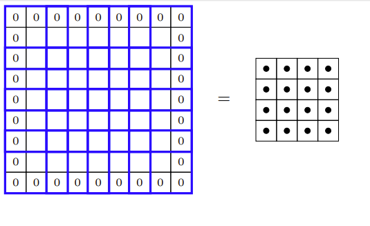
那么我们最终的公式应该是什么样的呢？\(W_2=\frac{W_1 - F + 2P}{S}+1\) ，\(H_2=\frac{H_1 - F + 2P}{S}+1\).
最后，关于输出的深度. 每个滤波器给我们一个二维输出. \(K\) 个滤波器将给我们 \(K\) 个这样的二维输出. 我们可以将得到的输出看作是 \(K×W_2×H_2\) 的体. 因此，\(D_2 = K\).
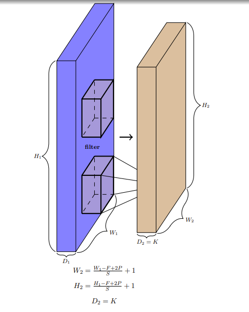
让我们做一些练习：
-
对于输入大小为227×227×3，有96个滤波器，步长为4，填充为0，计算可得 \(H_2 = 55 = \frac{227 - 11}{4}+1\) ，\(W_2 = 55 = \frac{227 - 11}{4}+1\) ，\(D_2 = 96\).
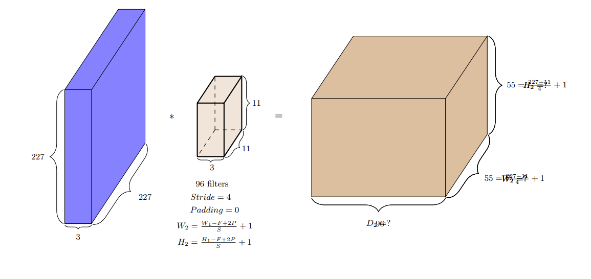
-
对于输入大小为32×32×5，有6个滤波器，步长为1，填充为0，计算可得 \(H_2 = 28 = \frac{32 - 5}{1}+1\) ，\(W_2 = 28 = \frac{32 - 5}{1}+1\) ，\(D_2 = 6\).
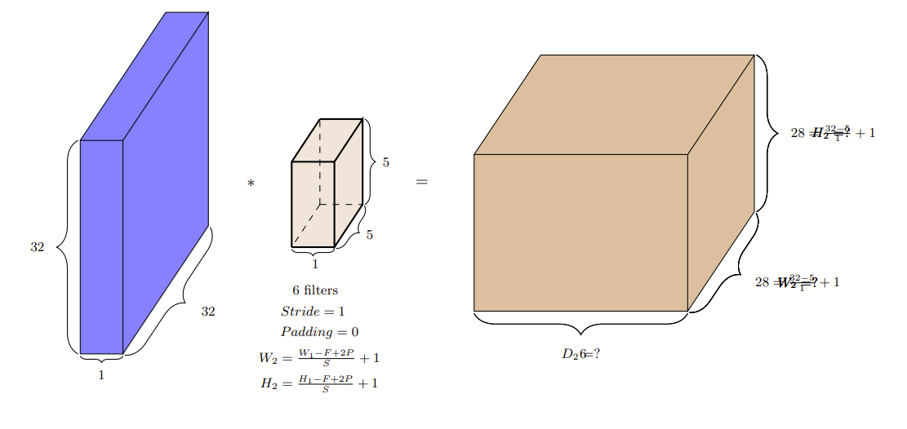
引入卷积神经网络¶
把这些内容联系起来看，卷积操作和神经网络之间有什么联系呢？我们通过考虑“图像分类”任务来理解这一点.
在图像分类的发展历程中，传统方法与现代深度学习方法的核心差异之一在于特征提取方式。传统方法的“手工特征+分类器”范式： | 阶段 | 核心操作 | 是否需要学习 | 依赖因素 | |--------------|---------------------------|--------------|------------------------| | 特征提取 | 边缘检测、SIFT/HOG计算 | 否 | 人工设计的算法规则 | | 分类器训练 | SVM/随机森林权重学习 | 是 | 特征向量与标签的映射关系 |
传统方法的本质是“人工定义特征提取逻辑，机器学习优化分类边界。
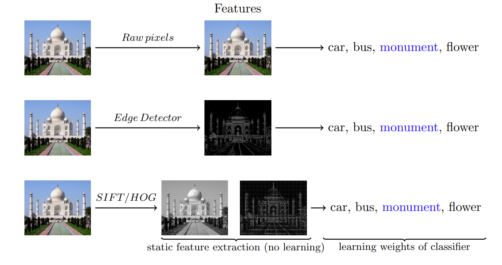
而现在我们思考，除了分类器需要学习，特征提取是否也可以学习呢？而不是使用手工制作的内核（如边缘检测器）来提取特征呢？甚至更进一步，能否学习多层有意义的内核/滤波器，同时学习分类器的权重呢？答案是肯定的！我们只需将这些内核视为参数，并使用反向传播与分类器的权重一起学习. 这样的网络就称为卷积神经网络.
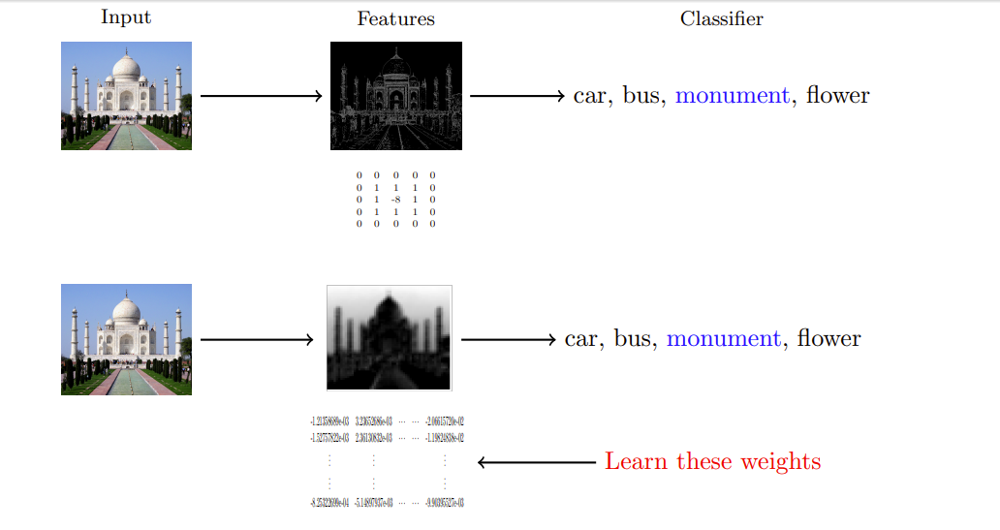
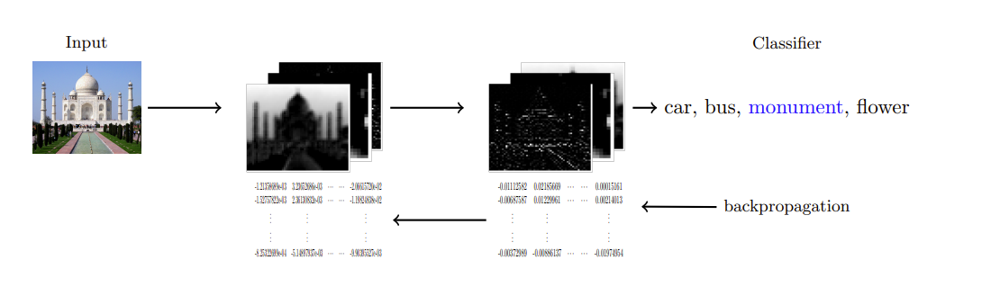
CNN与FNN的区别¶
那么，这与常规的前馈神经网络有什么不同呢？这是一个常规前馈神经网络的样子，其中有很多密集连接. 例如，所有16个输入神经元都参与 \(h_{11}\) 的计算.
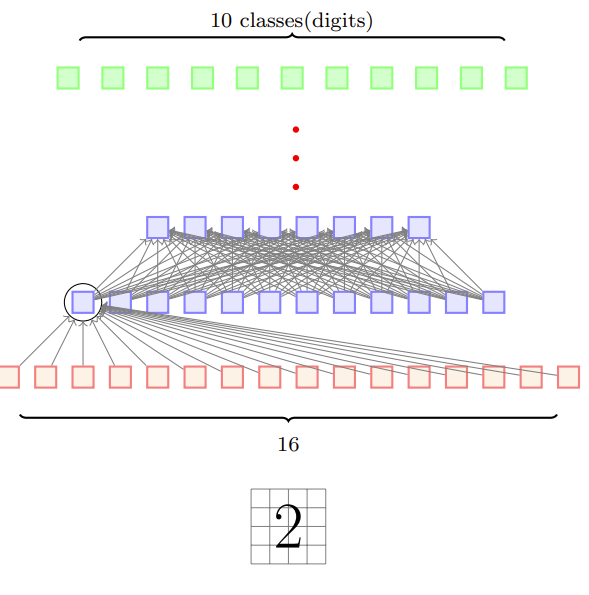
相比之下，在卷积的情况下，只有少数局部神经元参与 \(h_{11}\) 的计算. 例如，只有像素1、2、5、6参与 \(h_{11}\) 的计算. 连接要稀疏得多，我们利用了图像的结构（相邻像素之间的相互作用更有意义）. 这种稀疏连接减少了模型中的参数数量.
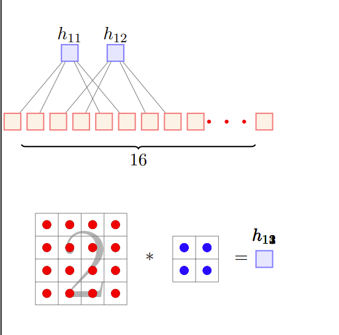
但是稀疏连接真的是一件好事吗？我们难道不会因为失去一些输入像素之间的相互作用而丢失信息吗？实际上并非如此. 例如，在第一层中两个突出显示的神经元（\(x_1\) 和 \(x_5\)）没有直接相互作用，但它们间接对 \(g_3\) 的计算有贡献，因此存在间接相互作用.
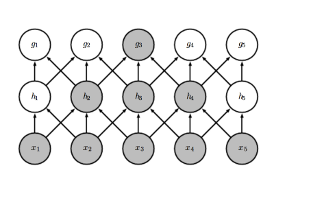
卷积神经网络的另一个特点是权重共享. 考虑一个网络，我们是否希望图像不同部分的内核权重不同呢？假设我们试图学习一个检测边缘的内核，难道不应该在图像的所有部分应用相同的内核吗？换句话说，橙色和粉色的内核难道不应该相同吗？是的，确实应该相同. 这会使学习更容易（而不是在不同位置反复学习相同的权重/内核）. 但这并不意味着我们只能有一个内核. 我们可以有很多这样的内核，并且这些内核会在图像的所有位置共享，这就是“权重共享”.
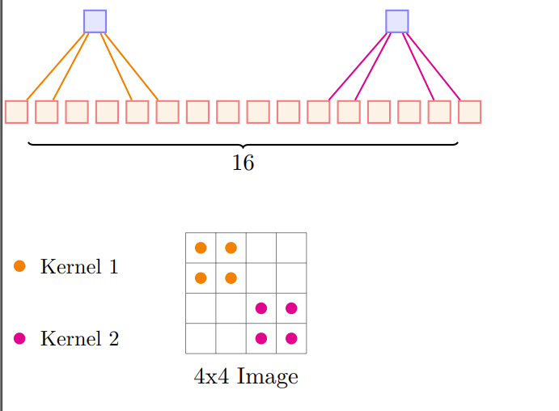
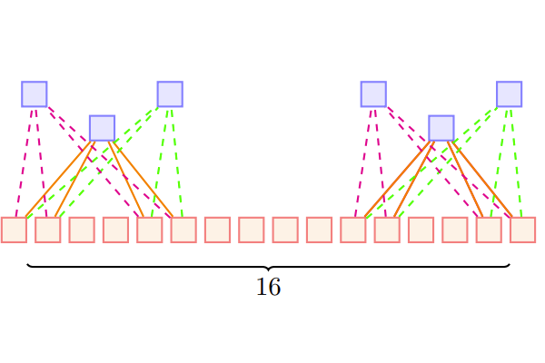
到目前为止，我们只关注了卷积操作. 让我们看看一个完整的卷积神经网络是什么样子.
2 卷积神经网络¶
卷积神经网络依次包括输入层、多个隐藏层和输出层，输入层会因应用场景不同而有所差异。隐藏层是 CNN 架构的核心模块，由一系列卷积层、池化层组成，并最终通过全连接层输出结果。
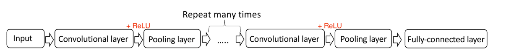
卷积层¶
卷积层是 CNN 的核心构建块。简而言之，特定形状的输入经过卷积层后会被抽象为特征图，一组可学习的滤波器（或内核）在这一过程中起着重要作用。图 5.2 对卷积层进行了更直观的解释。
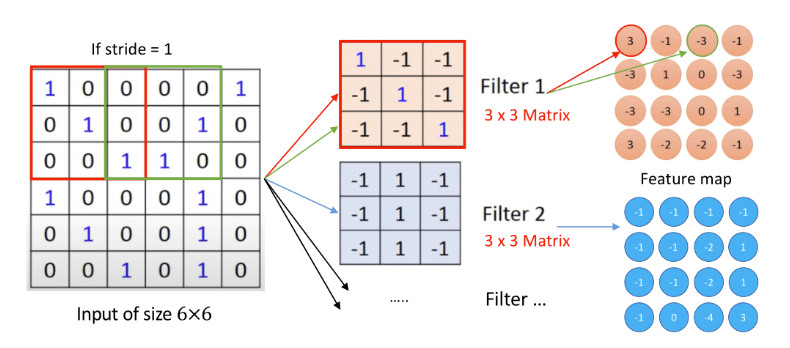
假设神经网络的输入为 6×6 矩阵，每个元素可表示为整数 0 或 1。如前所述，卷积层中有一组可学习的滤波器，每个滤波器可视为一个矩阵，类似于全连接层中的神经元。在此例中，3×3 大小的滤波器以特定步长（stride）滑过整个输入图像，矩阵或滤波器的每个元素均作为神经网络的参数（权重和偏置）。传统上，这些参数并非基于初始设置，而是通过训练数据学习得到。通常，卷积层中不止一个滤波器，每个滤波器生成相同尺寸的特征图。该卷积层的输出是多个特征图（也称为激活图），这些对应不同滤波器的特征图沿深度维度堆叠在一起。
激活层¶
每个卷积层之后通常会接一个非线性层（或激活层），其目的是为神经网络引入非线性，因为卷积层中的操作本质上仍是线性的（逐元素乘法和求和）。然而，卷积层主要执行线性操作，因此连续的卷积层本质上等效于单个卷积层，这会限制网络的表示能力（我们知道线性操作+非线性激活函数可以逼近任何函数）。因此，需要在卷积层之间引入激活函数以避免此类问题。
激活函数执行非线性变换，在 CNN 中决定神经元是否激活，是 CNN 的关键组成部分。卷积层之后可使用多种激活函数，如双曲函数和 sigmoid 函数等，其中 ReLU 是神经网络（尤其是 CNN）中最常用的激活函数（Krizhevsky 等人，2012）.
饱和函数 \(f\): 设函数 \(f(x)\) 在定义域 \(\mathbb{R}\) 上可导，若存在常数 \(a, b, L_1, L_2 \in \mathbb{R}\)（\(L_1 \leq L_2\)），使得：
- 当 \(x \to +\infty\) 时，\(f(x) \to L_2\)（上饱和值），即
- 当 \(x \to -\infty\) 时，\(f(x) \to L_1\)（下饱和值），即
在饱和区域，饱和函数的导数趋近于零，即
- Sigmoid函数：
- 输出极限：\(\lim_{x \to +\infty} f(x) = 1\), \(\lim_{x \to -\infty} f(x) = 0\)
-
导数极限：\(\lim_{x \to \pm\infty} f'(x) = 0\)（因 \(f'(x) = f(x)(1-f(x))\)，在 \(x \to \pm\infty\) 时趋近于 0）。
-
Tanh函数：
- 输出极限：\(\lim_{x \to +\infty} f(x) = 1\), \(\lim_{x \to -\infty} f(x) = -1\)
- 导数极限：\(\lim_{x \to \pm\infty} f'(x) = 0\)（因 \(f'(x) = 1 - [f(x)]^2\)，在饱和区趋近于 0）。
非饱和函数 \(f\): 当 \(x \to +\infty\) 或 \(x \to -\infty\) 时，\(f(x)\) 的极限为 \(+\infty\) 或 \(-\infty\)，即
且在对应区间内，导数 \(f'(x)\) 不趋近于零（保持非零常数或发散）。
在定义域内，导数 \(f'(x)\) 的极限不为零，即
- 线性函数：
- 输出极限：\(\lim_{x \to +\infty} f(x) = \text{sign}(k)\cdot\infty\), \(\lim_{x \to -\infty} f(x) = -\text{sign}(k)\cdot\infty\)
-
导数极限：\(\lim_{x \to \pm\infty} f'(x) = k \neq 0\)（恒为常数）。
-
ReLU函数（正区间）：
- 正区间（非饱和部分）：
当 \(x \to +\infty\) 时，\(\lim_{x \to +\infty} f(x) = +\infty\)，且 \(\lim_{x \to +\infty} f'(x) = 1 \neq 0\)。 -
负区间（可视为饱和）：
当 \(x \to -\infty\) 时，\(\lim_{x \to -\infty} f(x) = 0\)，\(\lim_{x \to -\infty} f'(x) = 0\)。
因此，ReLU是“部分非饱和函数”（正区间非饱和，负区间饱和）。 -
Leaky ReLU函数：
- 输出极限：
\(\lim_{x \to +\infty} f(x) = +\infty\), \(\lim_{x \to -\infty} f(x) = -\infty\)（因负区间斜率 \(\alpha \neq 0\)）。 - 导数极限：
\(\lim_{x \to +\infty} f'(x) = 1\), \(\lim_{x \to -\infty} f'(x) = \alpha\)，均不为零，全局非饱和。
| 特性 | 饱和函数 | 非饱和函数 |
|---|---|---|
| 输出极限（±∞） | 收敛到固定常数 \(L_1, L_2\) | 发散到 \(\pm\infty\) 或无界增长 |
| 导数极限（±∞） | 趋近于 0 | 非零常数或发散（如 \(\lim f'(x) = k \neq 0\)） |
| 典型场景 | 神经网络中的 sigmoid/tanh | 神经网络中的 ReLU/Leaky ReLU/线性函数 |
sigmoid、tanh函数都存在一个相同的问题，称为 “梯度消失”。这两种函数的导数范围都是 (0,1)，在反向阶段，使用链式法则计算偏导数，因此，在足够大的网络中，当足够多的这些导数相乘时，梯度将呈指数级下降，这意味着训练过程中为每个层创建的权重将不准确，并会影响网络的准确性。选择ReLU函数可以有效解决梯度消失解决梯度消失： - 恒等梯度传递： - 对于激活的神经元（\(x>0\)），ReLU 的导数为 1，梯度在反向传播中可无衰减地传递，避免了传统激活函数的指数级梯度消失。 - 示例：假设某层输入 \(x>0\)，其梯度为 \(\delta\)，则反向传播时该层梯度为 \(\delta\times 1=\delta\)，与层数无关。 - 稀疏激活特性： - ReLU 通过将负值置零，使网络产生 “稀疏激活”—— 只有部分神经元处于激活状态。这减少了参数间的依赖关系，缓解了梯度传播中的冗余计算，并增强了网络的特征选择能力。
但使用ReLU函数会出现死亡ReLU问题 - 现象：当输入 \(x\leq 0\) 时，神经元永久失活（导数为 0），导致该神经元在后续训练中无法更新权重，称为 “死亡 ReLU”。 - 原因：初始化权重不当或学习率过高，可能使大量神经元进入负区间。 - 改进变体Leaky ReLU：为负值引入小斜率（如 0.01），避免神经元完全失活：
$$ \left{\begin{matrix} x& \text{如果} x\geq 0\ \alpha x&\text{如果} x<0 \end{matrix}\right. $$ 其中 \(\alpha\) 是一个较小的常数（通常为0.01）
池化层¶
池化层是一个可以直观理解的概念，其目的是逐步减小从前一个卷积层生成的特征图的空间大小，并识别重要特征。 池化操作有多种，如平均池化、\(l_2\) 范数池化和最大池化等。其中，最大池化是最常用的函数（Scherer、Mulle 和 Behnke，2010），最大池化的思想是，特征的精确位置相对于其他特征的大致位置来说不那么重要（Yamaguchi 等人，1990）。 同时，这个过程在一定程度上有助于控制过拟合。下图展示了一个构建最大池化基本运算结构的示例。
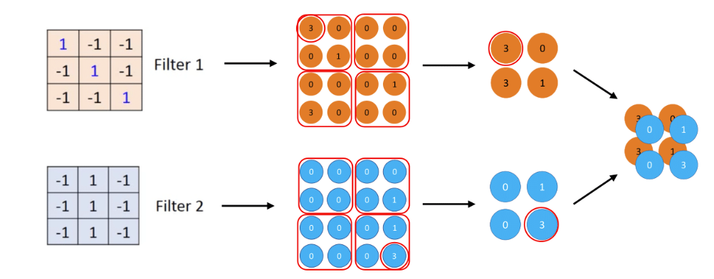
上述示例表明，根据两个不同的滤波器生成了两个特征图。在这种情况下，这些 4×4 大小的特征图被划分为四个不重叠的 2×2 大小的子区域，每个子区域称为深度切片。每个子区域的最大值将存储在池化层的输出中。结果，输入维度从 4×4 进一步减小到 2×2。 在神经网络中添加最大池化层的一些最重要原因包括以下几点：
- 降低计算复杂度：由于最大池化减小了卷积层给定输出的维度，网络将能够检测输出的更大区域。这个过程减少了神经网络中的参数数量，从而降低了计算负载。
- 控制过拟合：当过拟合出现时，模型过于复杂或过于拟合训练数据，可能会失去真实结构，然后难以推广到测试数据中的新情况。通过最大池化操作，不是提取所有特征，而是提取每个子区域的主要特征。因此，最大池化操作在很大程度上降低了过拟合的概率。
除了在 NLP 中最常用的这种操作外，针对不同目的的池化操作还包括以下几种： - 平均池化通常用于主题模型。如果一个句子有不同的主题，并且研究人员认为最大池化提取的信息不足，则可以考虑使用平均池化作为替代。 - Kalchbrenner、Grefenstette 和 Blunsom（2014）提出的动态池化能够根据网络结构动态调整特征的数量。更具体地说，通过将底部的相邻单词信息组合起来并逐步传递，在上层重新组合新的语义信息，使得句子中较远的单词也有交互行为（或某种语义连接）。最终，通过池化层提取句子中最重要的语义信息。
全连接层¶
如前所述，在多个卷积层和池化层之后连接一个或多个全连接层，全连接层中的每个神经元都与倒数第二层的所有神经元完全连接。如下图所示，全连接层可以将卷积层或池化层中具有类别区分的局部信息进行整合。为了提高 CNN 网络的性能，全连接层中每个神经元的激励函数通常使用 ReLU 函数。
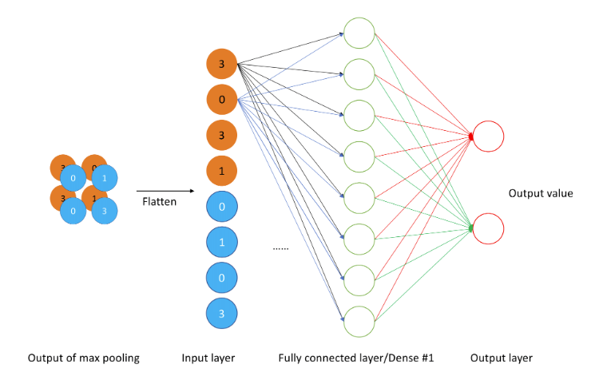
CNN训练¶
那么如何训练一个卷积神经网络呢？我们可以将卷积神经网络看作是一个具有稀疏连接的前馈神经网络，并使用反向传播来训练它. 由于使用的激活函数是ReLU函数，因此只有少数权值（用颜色表示）是激活的，其余的权值（用灰色表示）为零.
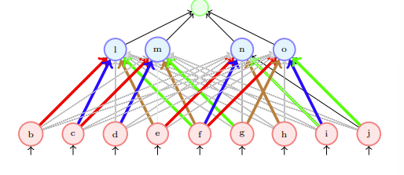
3 一些技巧¶
- 在卷积层之后进行批量归一化（Batch Normalization）.
- 采用[He等人]提出的Xavier/2初始化方法.
- 使用随机梯度下降（SGD）+动量（0.9）.
- 学习率：0.1，当验证误差趋于平稳时除以10.
- 小批量大小为256.
- 权重衰减为 \(1e - 5\).
- 不使用随机失活（dropout）.
4 总结¶
CNN与FNN的区别¶
CNN（卷积神经网络）与FNN（全连接神经网络，如传统多层感知机）在结构设计、功能特性和应用场景上有显著差异，核心区别如下：
1. 连接方式：局部连接 vs 全连接
- FNN（全连接神经网络）
- 每层神经元与前一层所有神经元全连接，即每个神经元接收前一层所有神经元的输出。
- 问题：参数量随输入尺寸呈二次方增长，例如输入为28×28×1的图像，全连接层第一个隐藏层若有1000个神经元，则参数数量为 \(28 \times 28 \times 1000 = 784,000\)，易导致过拟合和计算爆炸。
- CNN（卷积神经网络）
- 采用局部连接（每个神经元仅连接输入的局部区域，如3×3窗口）和权值共享（同一卷积核的参数在所有空间位置复用）。
- 优势：参数量仅由卷积核尺寸决定，与输入尺寸无关。例如，3×3卷积核处理28×28图像时，参数仅9个（单通道），大幅减少计算量和过拟合风险。
2. 特征提取：人工设计 vs 自动学习
- FNN
- 无显式特征提取机制，依赖人工预处理（如手工设计图像特征：SIFT、HOG），难以捕捉图像的空间层次结构。
- 对原始图像直接全连接处理时，需浅层网络先学习低级特征（如边缘），再由深层组合为高级特征，但效率低且易受噪声干扰。
- CNN
- 通过卷积层自动提取层次化特征：
- 底层卷积层学习低级特征（如边缘、纹理）；
- 高层卷积层通过堆叠组合学习高级语义特征（如物体部件、整体结构）。
- 池化层进一步强化特征的平移不变性，减少空间维度，提升鲁棒性。
3. 对空间结构的利用：平移不变性 vs 无
- FNN
- 无法利用图像的空间局部性和平移不变性（即同一特征在不同位置需重复学习）。
- 例如，检测图像中不同位置的“横线”需为每个位置单独训练参数，效率极低。
- CNN
- 权值共享强制同一特征在任意位置的检测方式一致，天然适配图像中特征重复出现的特性。
- 例如，一个卷积核学会检测左上角的“横线”后，可直接用于检测右下角的“横线”，仅需通过滑动窗口定位位置。
4. 计算复杂度与 scalability
- FNN
- 计算复杂度随输入尺寸呈指数级增长，难以处理高分辨率图像（如1024×1024）。
- 例如，输入尺寸翻倍，全连接层参数数量变为4倍。
- CNN
- 计算复杂度主要由卷积核尺寸和通道数决定，与输入尺寸的线性关系更优（如滑动窗口操作）。
- 可通过分层下采样（池化或步长卷积）逐步降低特征图尺寸，保持计算量可控，适合处理大尺寸图像。
5. 典型应用场景
- FNN
- 适用于非结构化数据（如文本、表格数据）或简单分类任务，例如：
- 手写数字识别（简单图像，可展平为向量）；
- 信用评分预测（表格数据）。
- CNN
- 专为结构化空间数据设计，尤其是图像、视频、音频等，例如：
- 图像分类（ResNet、AlexNet）；
- 目标检测（YOLO、Faster R-CNN）；
- 语义分割（U-Net）。
6. 深层网络训练：易退化 vs 可优化
- FNN
- 深层全连接网络易出现梯度消失/爆炸，训练困难（需依赖批量归一化、残差连接等技巧，但本质结构仍低效）。
- CNN
- 结构设计（如残差连接、密集连接）结合权值共享，更易训练深层网络，例如：
- ResNet通过跳层连接缓解梯度消失，可训练上百层网络；
- 卷积层的层级结构天然支持特征复用，减少信息丢失。
总结：核心差异对比表 | 维度 | FNN（全连接神经网络） | CNN（卷积神经网络） | |------------------|-----------------------------------------|---------------------------------------| | 连接方式 | 全连接，参数多且冗余 | 局部连接+权值共享，参数高效复用 | | 特征提取 | 依赖人工设计，无显式层次化机制 | 自动学习层次化特征，从低级到高级 | | 空间不变性 | 无，需数据增强模拟 | 天然支持平移不变性，特征检测位置无关 | | 计算复杂度 | \(O(N^2)\)（\(N\)为输入尺寸） | \(O(k^2 \times H \times W)\)（\(k\)为卷积核尺寸） | | 典型应用 | 非结构化数据、简单分类任务 | 图像、视频等空间结构化数据 | | 深层网络 | 易梯度消失，训练困难 | 结构优化（残差连接等）支持深层网络 |
本质区别：对“空间相关性”的建模能力 FNN将图像视为一维向量，忽略其二维空间结构；而CNN通过局部连接+权值共享+层次化堆叠，显式建模图像的空间局部相关性和平移不变性，这使其在视觉任务中远超FNN的性能。这种结构差异是CNN成为计算机视觉基石的核心原因。
CNN网络很深的原因¶
卷积神经网络（CNN）能够构建深层网络（如几十层甚至上百层）的核心原因：
- 结构设计：局部连接与权值共享减少参数，层次化提取从低级到高级特征，池化/步长卷积降低计算量。
- 训练技术：残差连接缓解梯度消失，批量归一化稳定激活分布，ReLU等非饱和激活函数改善梯度传递，优化算法与初始化策略提升收敛效率。
- 硬件支持：GPU/TPU并行计算加速训练，深度学习框架优化底层运算。
- 性能优势：深层网络特征表达能力更强，迁移学习效果显著。
挑战：需平衡过拟合、计算成本与网络退化问题（如轻量化设计）。